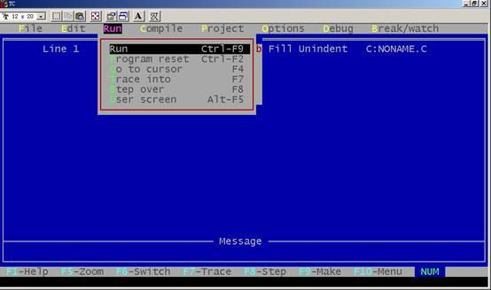
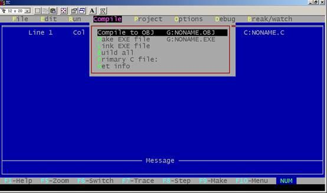
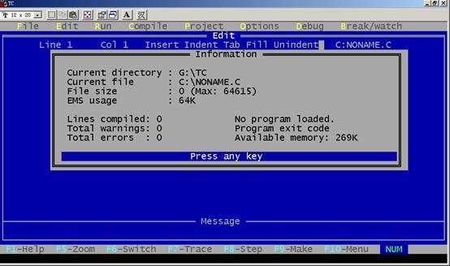
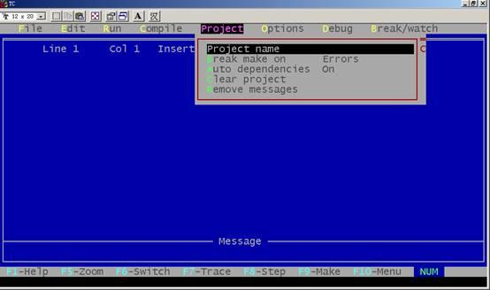

按Alt+E可进入编辑菜单, 若再回车, 则光标出现在编辑窗口, 此时用户可以 进行文本编辑。编辑方法基本与wordstar相同, 可用F1键获得有关编辑方法的帮助信息。
F1 获得Turbo C 2.0编辑命令的帮助信息；
F5 扩大编辑窗口到整个屏幕；
F6 在编辑窗口与信息窗口之间进行切换；
F10 从编辑窗口转到主菜单。
PageUp 向前翻页
PageDn 向后翻页
Home 将光标移到所在行的开始
End 将光标移到所在行的结尾
Ctrl+Y 删除光标所在的一行
Ctrl+T 删除光标所在处的一个词
Ctrl+KB 设置块开始
Ctrl+KK 设置块结尾
Ctrl+KV 块移动
Ctrl+KC 块拷贝
Ctrl+KY 块删除
Ctrl+KR 读文件
Ctrl+KW 存文件
Ctrl+KP 块文件打印
Ctrl+F1 如果光标所在处为Turbo C 2.0库函数, 则获得有关该函数的帮助信息
Ctrl+Q[ 查找Turbo C 2.0双界符的后匹配符
Ctrl+Q] 查找Turbo C 2.0双界符的前匹配符
1) Turbo C 2.0的双界符包括以下几种符号:
a) 花括符 {和}
b) 尖括符 <和>
c) 圆括符 (和)
d) 方括符 [和]
e) 注释符 /*和*/
f) 双引号 "
g) 单引号 '
2) Turbo C 2.0在编辑文件时还有一种功能, 就是能够自动缩进, 即光标定位和上一个非空字符对齐。在编辑窗口中,Ctrl+OL为自动缩进开关的控制。
按Alt+R可进入Run菜单, 该菜单有以下各项，如图所示：

1. Run：运行由Project/Project name项指定的文件名或当前编辑区的文件。如果对上次编译后的源代码未做过修改, 则直接运行到下一个断点(没有断点则运行到结束)。否则先进行编译、连接后才运行, 其热键为Ctrl+F9。
2. Program reset：中止当前的调试, 释放分给程序的空间, 其热键为Ctrl+F2。
3. Go to cursor：:调试程序时使用, 选择该项可使程序运行到光标所在行。光标所在行必须为一条可执行语句, 否则提示错误。其热键为F4。
4. Trace into：在执行一条调用其它用户定义的子函数时, 若用Trace into项, 则执行长条将跟踪到该子函数内部去执行, 其热键为F7。
5. Step over：执行当前函数的下一条语句, 即使用户函数调用, 执行长条也不会跟踪进函数 内部, 其热键为F8。
6. User screen：显示程序运行时在屏幕上显示的结果。其热键为Alt+F5。
按Alt+C可进入Compile菜单, 该菜单有以下几个内容，如图所示：

1. Compile to OBJ：将一个C源文件编译生成.OBJ目标文件, 同时显示生成的文件名。其热键为 Alt+F9。
2. Make EXE file：此命令生成一个.EXE的文件, 并显示生成的.EXE文件名。其中.EXE文件名是下面几项之一：
1) 由Project/Project name说明的项目文件名。
2) 若没有项目文件名, 则由Primary C file说明的源文件。
3) 若以上两项都没有文件名, 则为当前窗口的文件名。
3. Link EXE file：把当前.OBJ文件及库文件连接在一起生成.EXE文件。
4. Build all：重新编译项目里的所有文件, 并进行装配生成.EXE文件。该命令不作过时检查 (上面的几条命令要作过时检查, 即如果目前项目里源文件的日期和时间与目标文件相同或更早, 则拒绝对源文件进行编译)。
5. Primary C file：当在该项中指定了主文件后, 在以后的编译中, 如没有项目文件名则编译此项中规定的主C文件, 如果编译中有错误, 则将此文件调入编辑窗口, 不管目前窗口 中是不是主C文件。
6. Get info：获得有关当前路径、源文件名、源文件字节大小、编译中的错误数目、可用空间等信息，如图：

按Alt+P可进入Project菜单, 该菜单包括以下内容，如图所示：

1. Project name：项目名具有.PRJ的扩展名, 其中包括将要编译、连接的文件名。例如有一个程 序由file1.c, file2.c, file3.c组成, 要将这3个文件编译装配成一个file.exe的执行文件, 可以先建立一个file.prj的项目文件, 其内容如下:
file1.c
file2.c
file3.c
此时将file.prj放入Project name项中, 以后进行编译时将自动对项目文件中规定的三个源文件分别进行编译。然后连接成file.exe文件。如果其中有些文件已经编译成.OBJ文件, 而又没有修改过, 可直接写上.OBJ扩 展名。此时将不再编译而只进行连接。
例如:
file1.obj
file2.c
file3.c
将不对file1.c进行编译, 而直接连接。
说明:
当项目文件中的每个文件无扩展名时, 均按源文件对待, 另外, 其中的文件也可以是库文件, 但必须写上扩展名.LIB。
2. Break make on：由用户选择是否在有Warining、Errors、Fatal Errors时或Link之前退出Make编译。
3. Auto dependencies：当开关置为on, 编译时将检查源文件与对应的.OBJ文件日期和时间, 否则不进 行检查。
4. Clear project：清除Project/Project name中的项目文件名。
5. Remove messages：把错误信息从信息窗口中清除掉。